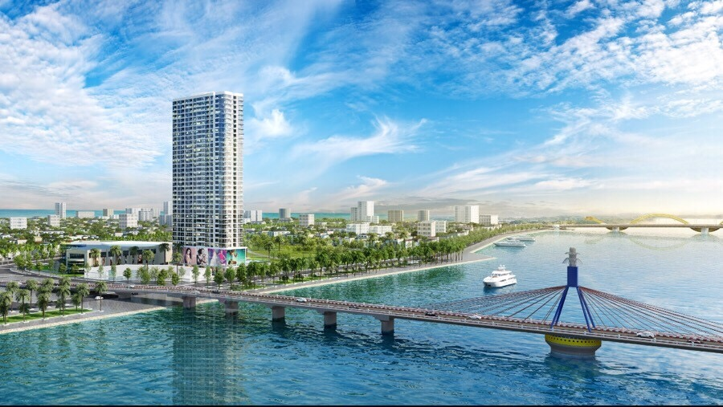

KHÁM PHÁ CẦU SÔNG HÀN ĐÀ NẴNG
CẦU SÔNG HÀN
Cầu Sông Hàn – chiếc cầu quay đầu tiên của cả nước, khánh thành năm 2000. Cầu có chiều dài 487,7m và rộng 12,9m, gồm 11 nhịp nối liền hai tuyến đường trung tâm giữa quận Hải Châu và quận Sơn Trà – hai trục đường chính của thành phố là đường Lê Duẩn và đường Phạm Văn Đồng.

Kết cấu bê tông cốt thép dự ứng lực và 02 nhịp dây văng có tổng chiều dài 122,7m, kết cấu dần và tháp cầu chính bằng thép, bản mặt cầu bằng bê tông cốt thép. Ngoài mục đích giao thông, cầu sông Hàn còn có giá trị to lớn về mặt thẩm mỹ mà nhiều người nói rằng, nó đẹp như một bức tranh vẽ giữa lòng thành phố. Chiếc cầu quay đặc biệt này do đội ngũ chuyên gia, kỹ sư Việt Nam thiết kế, thi công giai đoạn 1998 – 2000. Điều đáng nói hơn nữa là kinh phí xây dựng Cầu Sông Hàn được sự ủng hộ, đóng góp của nhân dân thành phố chiếm 30% trong tổng số kinh phí xây dựng là 117 tỷ đồng.
Để ghi nhận sự đóng góp của nhân dân thành phố, tên của những người có nhiều đóng góp xây cầu được khắc vào bảng đồng, gắn trang trọng trên thành cầu phía đường Bạch Đằng.
Cầu Sông Hàn không chỉ tạo thêm thuận lợi cho giao thông vận tải, du lịch, khơi dậy tiềm năng kinh tế của một vùng đất rộng lớn ở phía đông thành phố mà còn là một dấu ấn văn hoá của người Đà Nẵng hôm nay gửi lại muôn đời con cháu mai sau. Từ đó, biểu tượng của Ðà Nẵng không chỉ có Ngũ Hành Sơn mà còn có cây cầu quay độc đáo này.
Khám phá:
Thời gian cầu quay phục vụ khách du lịch: Từ 23h00 đến 00h00 các ngày thứ Bảy và Chủ Nhật Mục đích của việc xoay cầu sông Hàn là phục vụ giao thông đường thủy, khơi thông cho các tàu thuyền qua lại. Hằng ngày, vào khoảng 23h00, phần giữa của cây cầu quay 90 độ quanh trục và nằm dọc theo dòng chảy của dòng sông, mở đường cho tàu lớn đi qua. Khoảng 00h00 giờ sáng cầu sẽ quay trở lại như cũ. Thức khuya ngắm cầu Sông Hàn quay, ngắm thành phố yên bình về đêm, người dân và du khách như tìm lại một chút tĩnh lặng trong tâm hồn. Phải chăng vì thế mà với nhiều người “chưa xem cầu Sông Hàn quay nghĩa là chưa cảm nhận hết vẻ đẹp của Đà Nẵng” ?
Để ghi nhận sự đóng góp của nhân dân thành phố, tên của những người có nhiều đóng góp xây cầu được khắc vào bảng đồng, gắn trang trọng trên thành cầu phía đường Bạch Đằng.
Cầu Sông Hàn không chỉ tạo thêm thuận lợi cho giao thông vận tải, du lịch, khơi dậy tiềm năng kinh tế của một vùng đất rộng lớn ở phía đông thành phố mà còn là một dấu ấn văn hoá của người Đà Nẵng hôm nay gửi lại muôn đời con cháu mai sau. Từ đó, biểu tượng của Ðà Nẵng không chỉ có Ngũ Hành Sơn mà còn có cây cầu quay độc đáo này.
Khám phá:
Thời gian cầu quay phục vụ khách du lịch: Từ 23h00 đến 00h00 các ngày thứ Bảy và Chủ Nhật Mục đích của việc xoay cầu sông Hàn là phục vụ giao thông đường thủy, khơi thông cho các tàu thuyền qua lại. Hằng ngày, vào khoảng 23h00, phần giữa của cây cầu quay 90 độ quanh trục và nằm dọc theo dòng chảy của dòng sông, mở đường cho tàu lớn đi qua. Khoảng 00h00 giờ sáng cầu sẽ quay trở lại như cũ. Thức khuya ngắm cầu Sông Hàn quay, ngắm thành phố yên bình về đêm, người dân và du khách như tìm lại một chút tĩnh lặng trong tâm hồn. Phải chăng vì thế mà với nhiều người “chưa xem cầu Sông Hàn quay nghĩa là chưa cảm nhận hết vẻ đẹp của Đà Nẵng” ?
Địa chỉ: Ngã tư Lê Duẩn – Trần Phú, T.P Đà Nẵng.
Xem bản đồ
Đánh Giá:
Những cây cầu
Các Ngôi Chùa
Điểm du lịch hấp dẫn
Có thể bạn quan tâm
 Chinh phục núi Ngũ Hành Sơn nỗi tiếng Đà Nẵng.
Chinh phục núi Ngũ Hành Sơn nỗi tiếng Đà Nẵng.


Tìm hiểu ẩm thực chợ đêm helio Sơn Trà Đà Nẵng.
August 22, 2018

Có thể bạn chưa biết,nên đi du lịch biển vào thời điểm nào là đẹp nhất.
September 10, 2015